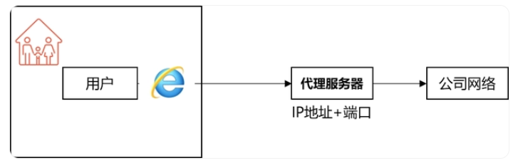

requests模块使用
requests模块
1 | requests是一个基于网络请求的模块,可以使用程序模拟浏览器上网。通过 requests 可以完成各种类型的 HTTP 请求，包括 HTTP、HTTPS、HTTP1.0、HTTP1.1 及各种请求方法。作为一个专门为「人类」编写的 HTTP 请求库，其易用性很强，因此在推出之后就迅速成为 Python 中首选的 HTTP 请求库。requests 库的最大特点是提供了简单易用的 API，让编程人员可以轻松地提高效率。 |
requests 安装
1 | pip install requests |
requests常用方法
requests.get(url, params=None, headers=None, cookies=None, auth=None, timeout=None)
1 | 发送 GET 请求，并返回一个 Response 对象。url 参数是请求的 URL，params 是一个字典，包含请求的查询参数，headers 是一个字典，包含请求头信息，cookies 是一个字典，包含请求的 Cookie，auth 是一个元组，包含 HTTP 基本认证的用户名和密码，timeout 是超时时间。 |
requests.post(url, data=None, json=None, headers=None, cookies=None, auth=None, timeout=None)
1 | 发送 POST 请求，并返回一个 Response 对象。data 是一个字典，包含 POST 请求的表单数据，json 是一个 JSON 对象，包含 POST 请求的 JSON 数据。 |
requests.put(url, data=None, headers=None, cookies=None, auth=None, timeout=None)
1 | requests.put(url, data=None, headers=None, cookies=None, auth=None, timeout=None)：发送 PUT 请求。 |
requests.delete(url, headers=None, cookies=None, auth=None, timeout=None)
1 | requests.delete(url, headers=None, cookies=None, auth=None, timeout=None)：发送 DELETE 请求。 |
requests.head(url, headers=None, cookies=None, auth=None, timeout=None)
1 | requests.head(url, headers=None, cookies=None, auth=None, timeout=None)：发送 HEAD 请求。 |
requests.patch(url, data=None, headers=None, cookies=None, auth=None, timeout=None)
1 | requests.patch(url, data=None, headers=None, cookies=None, auth=None, timeout=None)：发送 PATCH 请求。 |
requests.options(url, headers=None, cookies=None, auth=None, timeout=None)
1 | requests.options(url, headers=None, cookies=None, auth=None, timeout=None)：发送 OPTIONS 请求。 |
response 常用函数
.status_code
1 | 获取响应的状态码，例如 `200` 表示请求成功，`404` 表示资源未找到，`500` 表示服务器内部错误等。 |
.text
1 | 获取响应的文本内容，以字符串形式返回。 |
.content
1 | 获取响应的内容，以字节形式返回。 |
.json()
1 | 解析响应的 JSON 数据，并返回一个 Python 字典或列表。 |
.headers
1 | 获取响应的头部信息，以字典形式返回。 |
.cookies
1 | 获取响应中的 Cookie 信息，以字典形式返回。 |
.url
1 | 获取响应的 URL，用于查看请求最终访问的地址，可用于处理重定向。 |
.encoding
1 | 获取响应的编码方式。 |
.raise_for_status()
1 | 如果响应状态码表示请求失败（如 4xx 或 5xx），则抛出异常，否则不做任何操作。 |
.history
1 | 获取响应的历史记录，以列表形式返回，用于查看请求的重定向历史。 |
代理

1 | 用户访问外部网络时，将访问请求首先转发给代理服务器，然后再由代理服务器发起请求，这个过程被叫做网络代理访问。 |
在爬虫中为何需要使用代理？
1 | 有些时候，需要对网站服务器发起高频的请求，网站的服务器会检测到这样的异常现象，则会讲请求对应机器的ip地址加入黑名单，则该ip再次发起的请求，网站服务器就不在受理，则我们就无法再次爬取该网站的数据。 |
代理的匿名度
1 | 透明：网站的服务器知道你使用了代理，也知道你的真实ip。 |
代理的类型（重要）
1 | http：该类型的代理服务器只可以转发http协议的请求。 |
如何获取代理?
1 | 芝麻代理： [https://jahttp.zhimaruanjian.com/](https://jahttp.zhimaruanjian.com/)（推荐，有新人福利） |
访问如下网址，返回自己本机ip
1 | def getSelfIp(): |
使用代理发起请求，查看是否可以返回代理服务器的ip
1 | #通过requests发起请求时，在请求参数proxies中填写代理ip和端口，实现代理 |
构建代理池进行请求(需要申请三方代理池)
1 | import random |
使用示例
1 | import requests |
本博客所有文章除特别声明外，均采用 CC BY-NC-SA 4.0 许可协议。转载请注明来自 East'blog！